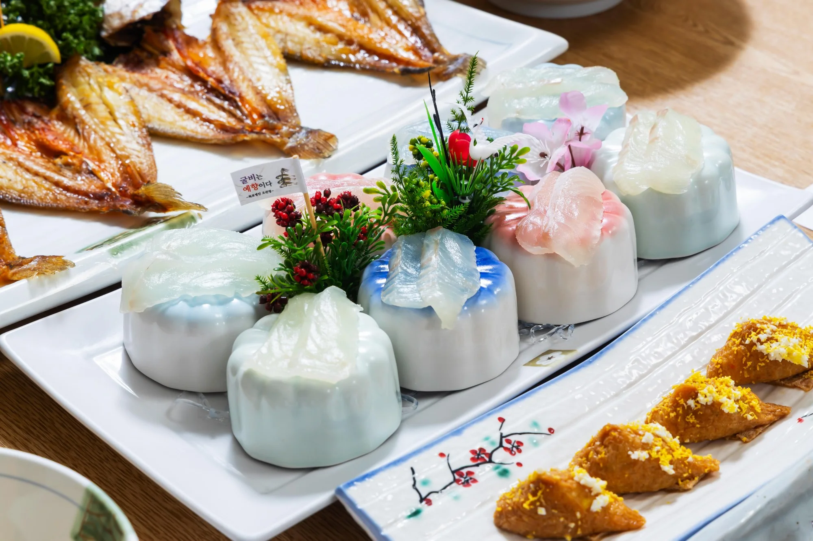
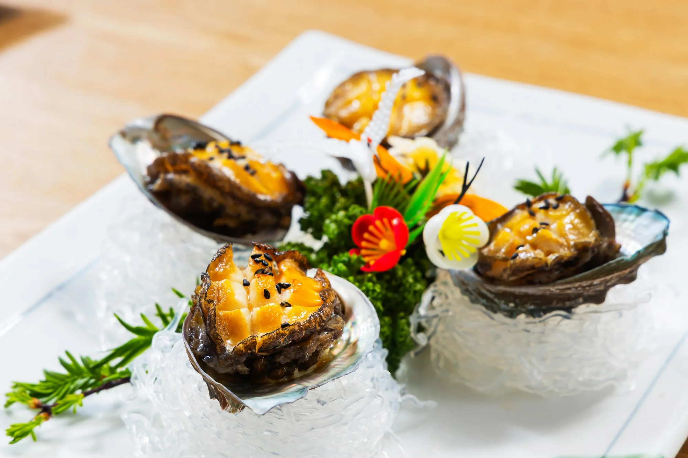
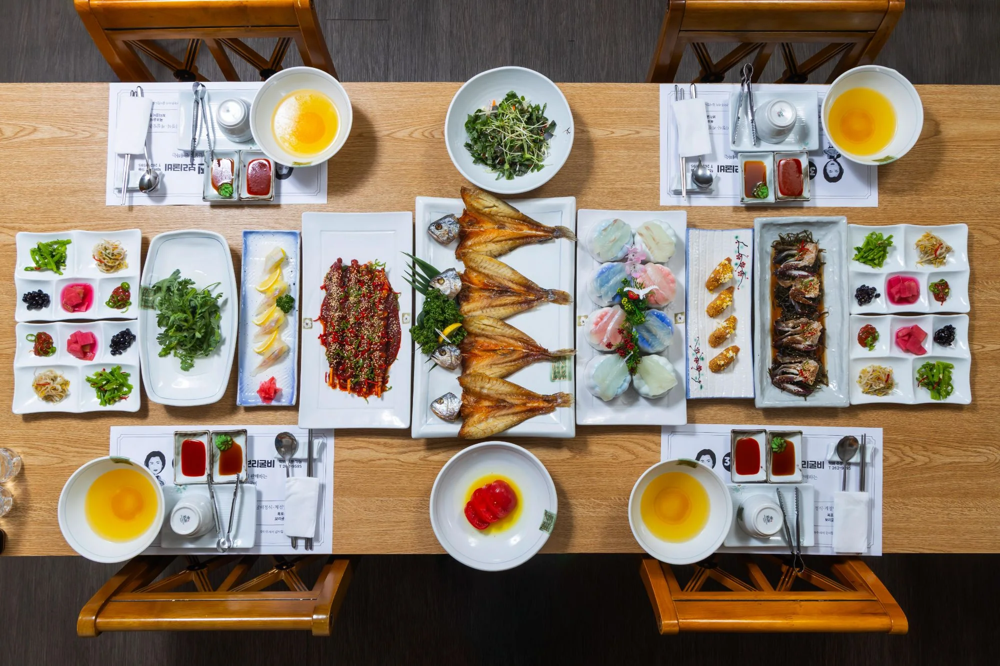
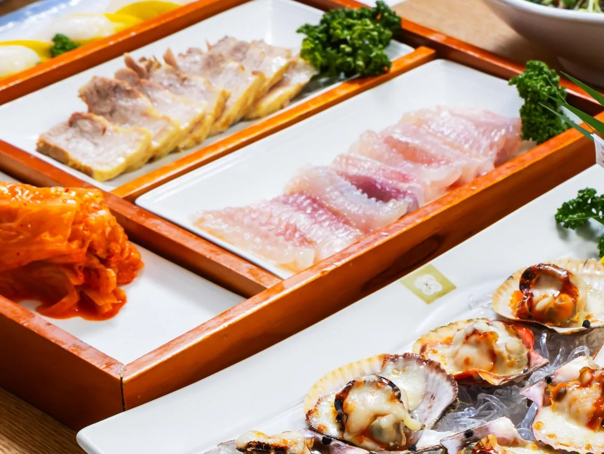

목포 바다의
제철 활어회
그날 들어온 활어를 꽃 모양으로 정성껏 담아냅니다. 울금으로 지은 노란 초밥과 함께 목포 바다의 신선함을 먼저 맛보세요.
OUR ESSENCE
목포의 바다+명인의 정성
좋은 재료를 고르고, 정성으로 차려냅니다.
1969년부터 이어온 목포식 한정식, 예향입니다.



그날 들어온 활어를 꽃 모양으로 정성껏 담아냅니다. 울금으로 지은 노란 초밥과 함께 목포 바다의 신선함을 먼저 맛보세요.
전복, 낙지호롱, 홍어삼합까지. 남도의 귀한 재료를 명인의 손으로 다듬어 한 접시씩 정갈하게 올립니다.
풍성한 찬과 정갈한 상차림. 가족 모임, 상견례, 귀한 손님 접대까지 함께 나누는 식사에 마음을 더합니다.
SIGNATURE MENU



가볍게 즐기는 점심부터
귀한 손님을 모시는 날까지,
자리에 맞는 한 상을 준비합니다.
목포식 굴비 정식부터 낙굴 정식까지
점심 특선 목포식 굴비 정식(1인 20,000원), 명품 정식·떡갈비랑 굴비랑(1인 30,000원), 판매 1위 낙굴 정식(1인 40,000원).
홍어삼합에 낙지, 회와 보리굴비까지
목포의 대표 음식 홍어삼합과 낙지, 활어회와 초밥, 큼직한 보리굴비를 한 번에 즐기는 가장 풍성한 정식입니다. 1인 50,000원.
함께 나누는 한상차림 코스
꽃 활어회와 해산물 모둠, 초밥과 제철 찬을 한 상 가득. 예향 정식 3~4인 160,000원, 예향 특정식 4~5인 200,000원.
정성 가득한 한 상을 도시락에
보리굴비, 낙지호롱, 수제 떡갈비를 한 도시락에 담았습니다. 행사·모임 도시락은 전화로 주문해 주세요. 1개 20,000원.
AWARDS & HONORS
목포음식 제18호 명인 · 한국음식명장 · 대한민국 한식대가
목포음식 명인 인증
남도음식명가 선정
대상 수상 (2022–2026)
룸 · 별실 12실 포함
RESERVATION
매일 11:00 – 21:00 · 브레이크타임 14:30 – 17:00 · 라스트오더 20:00
네. 룸·별실 12실과 단체석이 있어 2명부터 최대 90명까지 이용하실 수 있습니다. 예상 인원과 날짜를 전화(061-262-9595)로 알려주시면 메뉴와 자리를 상담해 드립니다.
매장에서 도보 1분 거리의 평화광장 무료 공영주차장을 이용해 주세요.
매일 11:00 – 21:00 영업하며, 브레이크타임은 14:30 – 17:00, 라스트오더는 20:00입니다. 명절 당일 휴무는 예향 소식에서 안내드립니다.
유아 의자가 준비되어 있고, 출입구와 좌석 모두 휠체어 이용이 가능합니다. 필요하신 사항은 예약 시 말씀해 주세요.